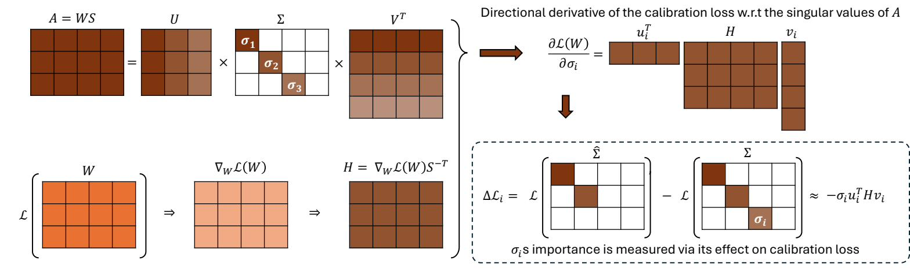
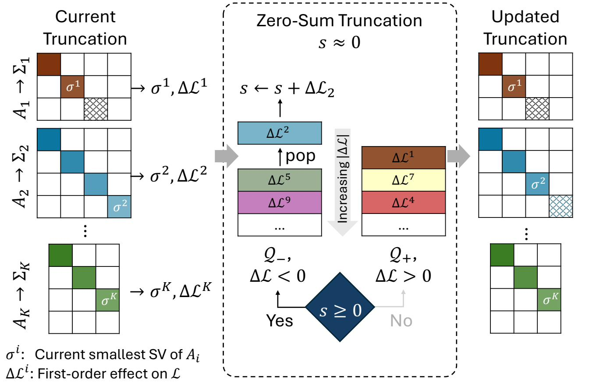

Zero Sum SVD · Balancing Loss Sensitivity for Low-Rank LLM Compression
2Department of Electrical and Computer Engineering, Vanderbilt University
3Nanofold.ai
Advances in large language models have driven strong performance across many tasks, but their memory and compute costs still hinder deployment. SVD-based compression reduces storage and can speed up inference via low-rank factors, yet performance depends on how rank is allocated under a global compression ratio. Prior methods often use homogeneous ranks for similarly sized matrices, despite large differences in loss sensitivity, or rely on expensive iterative pre-truncation optimization to determine per-matrix ranks.
We propose Zero‑Sum SVD (ZS‑SVD), a post-training method that performs global singular-component selection using activation whitening and first-order calibration-loss estimates in whitened coordinates. ZS‑SVD prunes components across the whole model with a zero-sum rule that keeps the cumulative predicted loss change near zero, automatically yielding heterogeneous ranks without solving a rank-allocation optimization. Motivated by evidence that gradients near pretrained solutions exhibit low-rank structure, we also introduce an optional lightweight correction that applies a single projected gradient update after truncation, followed by re-truncation. Extensive experiments across multiple LLM architectures show consistent gains across diverse benchmarks and compression ratios.
Three ideas, one budget.
ZS-SVD does not pre-allocate ranks per layer. It treats every singular component in the model as a candidate and decides what to drop with a single, principled rule.
First-order singular sensitivity
For each component we estimate its directional derivative on the calibration loss in whitened coordinates: $\Delta\mathcal{L}_i \approx -\sigma_i\, u_i^\top H v_i$, with $H = \nabla_W\mathcal{L} \cdot S^{-\top}$.
Zero-sum global selection
A two-heap greedy rule pulls components so the running sum of predicted loss changes stays near zero — automatically inducing heterogeneous ranks under a global budget.
Light truncate–correct–re-truncate
One projected-gradient step briefly leaves the low-rank manifold to recover loss; re-truncation incurs negligible error because gradients near pretrained solutions are themselves low-rank.
Hardware-agnostic, fast
No specialized kernels, no expensive per-layer rank optimization, real wall-clock speedups. Improves perplexity and zero-shot accuracy across LLaMA, Vicuna, OPT, and 7B–30B scales.
Ranking singular values by their effect on the loss.
Let $W \in \mathbb{R}^{m\times n}$ be a layer's weight and $X$ its calibration activations. Following SVD-LLM's whitening, write $A = WS$ where $S$ is the Cholesky factor of $XX^\top$. The whitened gradient $H = \nabla_W \mathcal{L}\cdot S^{-\top}$ tells us how each direction of $W$ moves the loss; combined with $A = U\Sigma V^\top$, the first-order change from zeroing the $i$-th singular value is
Both magnitude and sign matter. $|\sigma_i\, u_i^\top H v_i|$ predicts the impact of removing the component; the sign tells us whether removal will increase or decrease the calibration loss. That signed estimate is the lever the rest of the method pulls on.

The zero‑sum rule.
Across nearly a million singular components, predicted ΔL splits almost exactly evenly between signs. That balance is what makes a zero-sum ledger feasible — there's a steady supply of both directions to draw from.
Within each matrix we always consider its smallest remaining singular value as the next candidate (preserving spectral order). Globally, we pool one candidate per matrix and split the pool by the sign of $\Delta\mathcal{L}$ into two min-heaps $\mathcal{Q}_+$ and $\mathcal{Q}_-$, both keyed by $|\Delta\mathcal{L}|$.
At each step, let $s = \sum_{j\in\mathcal{D}}\Delta\mathcal{L}_j$ be the running cumulative predicted loss change. We pop from the heap whose sign opposes the current drift:
The result: a single greedy pass that simultaneously controls (i) the local reconstruction distortion in whitened space (via $\sigma_i$), (ii) the global predicted task-loss drift (via the zero-sum ledger), and (iii) the parameter budget. Heterogeneous per-layer ranks fall out for free — no separate rank-allocation optimization is needed.

One projected gradient step, then re-truncate.
After truncating $W \to W'_k$, the residual is $\Delta W = W - W'_k$. We replace it with the minimum-Frobenius-norm perturbation that matches its first-order loss change — the projection of $\Delta W$ onto the gradient $g$:
By Lemma 1 (rank subadditivity), $\mathrm{rank}(W'_k + \Delta W') \le k + \mathrm{rank}(g)$. The projection error of re-truncation depends only on $\mathrm{rank}(g)$. Empirically, gradients of pretrained transformers are sharply low-rank — so the re-truncation back to rank $k$ loses very little. The figure below shows the effective rank ratio between gradient and weight across layers and projection types in LLaMA: gradients are typically an order of magnitude lower-rank than weights.
In practice this rank-bound argument shows up as a controlled descent in actual loss. Iterating the truncate–correct–re-truncate cycle on LLaMA-7B at 60% pruning produces a decaying zigzag — each truncation introduces a small upward bump, each correction drops the loss further, and the trajectory keeps trending down because the corrections stay close to the rank-$k$ manifold.
Consistent gains across models, scales, and ratios.
We evaluate language-modeling perplexity on WikiText-2, PTB, and C4, and zero-shot accuracy across seven commonsense reasoning tasks (OpenBookQA, ARC-e/c, WinoGrande, HellaSwag, PIQA, MathQA), following the SVD-LLM and Dobi-SVD calibration protocol (256 sequences of length 2048).
30% pruning · LLaMA-7B and Vicuna-7B
| Method | LLaMA-7B | Vicuna-7B | ||||||
|---|---|---|---|---|---|---|---|---|
| WT2 ↓ | PTB ↓ | C4 ↓ | Avg ↑ | WT2 ↓ | PTB ↓ | C4 ↓ | Avg ↑ | |
| ASVD | 95.3 | 200.9 | 86.3 | 0.36 | 91.4 | 415.6 | 136.2 | 0.32 |
| FWSVD | 33.0 | 53.6 | 38.2 | 0.39 | 43.7 | 239.3 | 64.8 | 0.36 |
| SVD-LLM | 9.5 | 29.0 | 26.4 | 0.40 | 12.4 | 124.5 | 39.5 | 0.40 |
| Dip-SVD | 9.4 | 22.3 | 19.9 | 0.44 | 12.1 | 81.1 | 28.8 | 0.43 |
| ZS-SVD (ours) | 8.2 | 19.6 | 16.8 | 0.46 | 10.2 | 48.0 | 21.8 | 0.46 |
Lower is better for perplexity (PPL on WikiText-2 / PTB / C4); higher is better for the average over seven commonsense reasoning tasks.
Aggressive compression · LLaMA-2-7B at 60% pruning
| Method | PIQA | HellaSwag | WinoGrande | ARC-e | ARC-c | Avg ↑ |
|---|---|---|---|---|---|---|
| SVD-LLM | 0.54 | 0.27 | 0.48 | 0.26 | 0.20 | 0.35 |
| Dobi-SVD* | 0.67 | 0.38 | 0.57 | 0.55 | 0.26 | 0.49 |
| ZS-SVD† (ours) | 0.73 | 0.48 | 0.68 | 0.70 | 0.36 | 0.59 |
Zero-shot accuracy at 0.4 maintenance ratio (i.e., 60% truncation). $^*$denotes Dobi-SVD without remap; $^\dagger$denotes ZS-SVD with the truncate–correct–re-truncate pipeline. Full tables with ASVD, OPT-6.7B, LLaMA-13B, LLaMA-30B, structured pruning baselines, and ablations are in the paper.
BibTeX
If you find this work useful, please consider citing it. The arXiv ID will be updated when posted.
@inproceedings{abbasi2026zerosumsvd,
title = {Zero Sum {SVD}: Balancing Loss Sensitivity for Low Rank {LLM} Compression},
author = {Abbasi, Ali and Thrash, Chayne and Qin, Haoran
and Sharma, Shansita and Seifi, Sepehr and Kolouri, Soheil},
booktitle = {Proceedings of the 43rd International Conference on Machine Learning ({ICML})},
year = {2026},
eprint = {2602.02848},
archivePrefix = {arXiv},
primaryClass = {cs.LG}
}